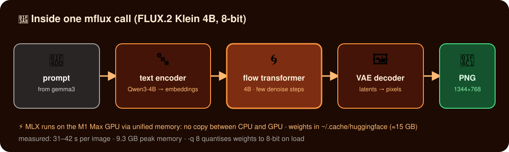
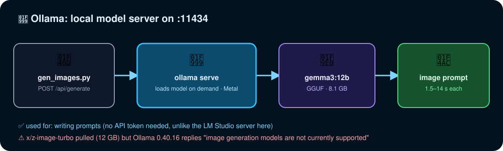

🏗️ How simpligen works
Four local programs make every part of the video: 🦙 Ollama writes, 🎨 mflux paints, 🔊 Kokoro speaks, and 🎬 simpligen animates and encodes. Only the finished files go to the cloud.

🔄 The two steps
| Step | Command | Uses | Time (M1 Max) |
|---|---|---|---|
| ① 🎨 Make images (once per script) | python3 tools/gen_images.py examples/demo.json examples/images | 🦙 Ollama → 🎨 mflux | ~34 s / image |
| ② 🎬 Make the video | python3 -m simpligen examples/demo.json site/demo.mp4 | 🔊 Kokoro · Pillow · rsvg · ffmpeg | 95–160 s for 2 min |
| ③ 🚀 Publish | git push && fly deploy | GitHub · Fly.io (static nginx) | ~1 min |
Images are a separate step on purpose. They are the slowest part, so they're generated once and saved in examples/images/. Changing a narration line or a colour then only re-runs step ②.
🎨 mflux: the image engine
What it is: an open-source port of FLUX-family image models to Apple's MLX framework. MLX runs on the Mac GPU through unified memory, so no data is copied between CPU and GPU. That makes it much faster on a Mac than generic PyTorch builds.

| 📦 Installed with | uv tool install mflux (50 commands, including mflux-generate-flux2) |
| 🧠 Model | FLUX.2 Klein 4B by Black Forest Labs, Apache 2.0, built in as flux2-klein-4b |
| 💾 On disk | ~15 GB in ~/.cache/huggingface. The first download took ~7.5 min. |
| ⚙️ Settings used | -q 8 (8-bit weights), 1344×768, seed 100+scene number |
| ⏱️ Measured | 31–42 s per image (34 s avg) · 9.3 GB peak memory |
mflux-generate-flux2 --model flux2-klein-4b -q 8 --seed 107 \ --width 1344 --height 768 --prompt "$PROMPT" --output examples/images/07.png
🦙 Ollama: the prompt writer
What it is: a local model server. ollama serve listens on localhost:11434, loads a model the first time it's asked, runs it on the GPU through Metal, and unloads it when idle. simpligen sends it plain HTTP and needs no SDK or API key.

curl localhost:11434/api/generate -d '{
"model": "gemma3:12b", "stream": false,
"prompt": "Write ONE image prompt (max 35 words) for a slide titled ..."
}'
| Ollama model | Role here | Size | Status |
|---|---|---|---|
| 🧠 gemma3:12b | Writes every image prompt | 8.1 GB | ✅ used |
| 🎨 x/z-image-turbo | Would be a second image engine | 12 GB | ⚠️ Ollama 0.40.16: "image generation models are not currently supported" |
Why Ollama and not LM Studio for prompts? Both can serve gemma. The LM Studio server on this Mac requires an API token, while Ollama on localhost doesn't, so the script stays simpler. LM Studio has no image generation of its own.
🎬 Inside simpligen
| File | Job |
|---|---|
simpligen/render.py | Loads the scene JSON, calls Kokoro (falls back to say), draws slides (image + scrim, emoji, title, SVG card), times each clip to its narration, joins everything with ffmpeg |
simpligen/animate.py | Animated intro: Ken Burns pan, scrolling film strip, emoji pop, letter-by-letter title, icons. Drawn frame by frame with easing functions, about 50 ms per 1080p frame |
tools/gen_images.py | Ollama prompt, then mflux image, per scene. Writes prompts.json |
tools/build_gallery.py | Builds the 🎨 AI images page from prompts.json |
docker-compose.yml | Starts Kokoro on :8880 |
⚔️ Where HyperFrames would fit
HyperFrames would replace step ② only. You'd write each scene as HTML with a GSAP timeline, and its CLI would capture every frame in headless Chrome. Ollama, mflux and Kokoro would still make the prompts, images and voice.
The intro is written both ways for comparison. simpligen's is 161 lines of Python (simpligen/animate.py). The HyperFrames version is 58 lines of HTML with an 11-line GSAP timeline (comparisons/hyperframes-intro/index.html). The HyperFrames version hasn't been rendered here yet, because installing its CLI needs your approval.
☁️ What runs in the cloud
Only static files. Fly.io runs nginx on one auto-stopping shared-cpu-1x machine and serves the HTML, SVGs, JPGs and MP4. No model, key or render runs there.